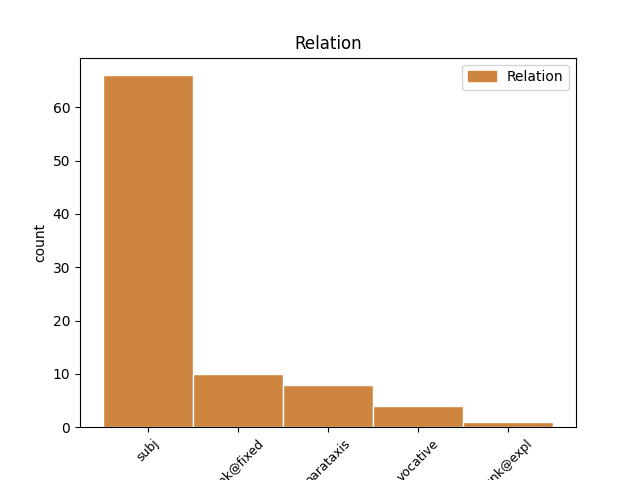
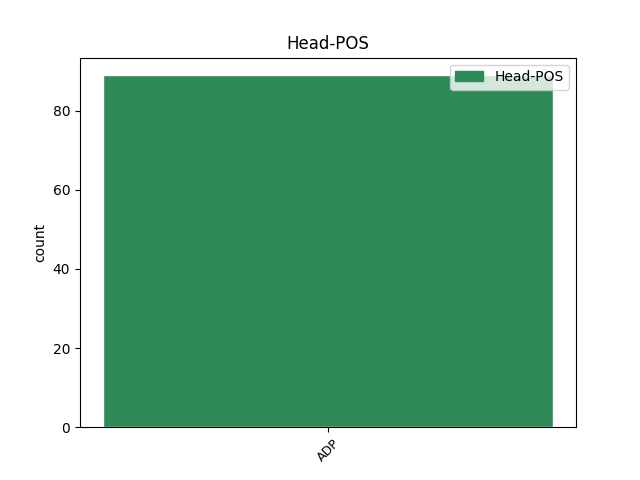
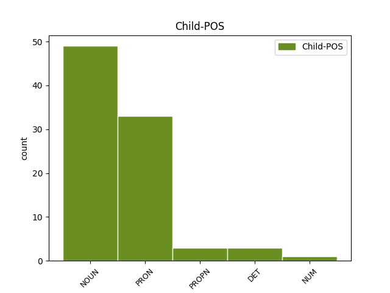

Distribution of features within this leaf



Agreement Rules sorted by frequency.
- When the dependent token is the unk@fixed(unk@fixed) of the head token, and the head token is ADP and the dependent token is PRON.
1 Двох _ _ _ _ 0 _ _ _
2 міністрів _ _ _ _ 0 _ _ _
3 усунено _ _ _ _ 0 _ _ _
4 , _ _ _ _ 0 _ _ _
5 Бівербрук _ _ _ _ 0 _ _ _
6 від'їде _ _ _ _ 0 _ _ _
7 до _ _ _ _ 0 _ _ _
8 Вашінгтона _ _ _ _ 0 _ _ _
9 , _ _ _ _ 0 _ _ _
10 здається _ _ _ _ 0 _ _ _
11 до _ _ _ _ 0 _ _ _
12 Воєнної _ _ _ _ 0 _ _ _
13 Ради _ _ _ _ 0 _ _ _
14 ; _ _ _ _ 0 _ _ _
15 за за ADP Spsa Case=Acc 0 _ _ _
16 те те PRON Pd--nnsan Animacy=Inan|Case=Acc|Gender=Neut|Number=Sing|PronType=Dem 15 unk@fixed _ Id=22lz|LTranslit=te|Translit=te
17 до _ _ _ _ 0 _ _ _
18 кабінету _ _ _ _ 0 _ _ _
19 уряду _ _ _ _ 0 _ _ _
20 ввійшов _ _ _ _ 0 _ _ _
21 відомий _ _ _ _ 0 _ _ _
22 зі _ _ _ _ 0 _ _ _
23 своєї _ _ _ _ 0 _ _ _
24 большевицької _ _ _ _ 0 _ _ _
25 агітації _ _ _ _ 0 _ _ _
26 Кріппс _ _ _ _ 0 _ _ _
27 як _ _ _ _ 0 _ _ _
28 льорд _ _ _ _ 0 _ _ _
29 печаті _ _ _ _ 0 _ _ _
30 і _ _ _ _ 0 _ _ _
31 міністр _ _ _ _ 0 _ _ _
32 для _ _ _ _ 0 _ _ _
33 Палати _ _ _ _ 0 _ _ _
34 Громад _ _ _ _ 0 _ _ _
35 . _ _ _ _ 0 _ _ _
1 Собаки _ _ _ _ 0 _ _ _
2 , _ _ _ _ 0 _ _ _
3 незалежно _ _ _ _ 0 _ _ _
4 від _ _ _ _ 0 _ _ _
5 породи _ _ _ _ 0 _ _ _
6 , _ _ _ _ 0 _ _ _
7 належності _ _ _ _ 0 _ _ _
8 та _ _ _ _ 0 _ _ _
9 призначення _ _ _ _ 0 _ _ _
10 , _ _ _ _ 0 _ _ _
11 у у ADP Spsl Case=Loc 0 _ _ _
12 тому той DET Pd--n-sla Case=Loc|Gender=Neut|Number=Sing|PronType=Dem 11 unk@fixed _ Id=1in7|LTranslit=toj|Translit=tomu
13 числі _ _ _ _ 0 _ _ _
14 й _ _ _ _ 0 _ _ _
15 ті _ _ _ _ 0 _ _ _
16 , _ _ _ _ 0 _ _ _
17 що _ _ _ _ 0 _ _ _
18 мають _ _ _ _ 0 _ _ _
19 нашийники _ _ _ _ 0 _ _ _
20 з _ _ _ _ 0 _ _ _
21 номерними _ _ _ _ 0 _ _ _
22 знаками _ _ _ _ 0 _ _ _
23 і _ _ _ _ 0 _ _ _
24 намордники _ _ _ _ 0 _ _ _
25 , _ _ _ _ 0 _ _ _
26 але _ _ _ _ 0 _ _ _
27 знаходяться _ _ _ _ 0 _ _ _
28 без _ _ _ _ 0 _ _ _
29 власника _ _ _ _ 0 _ _ _
30 на _ _ _ _ 0 _ _ _
31 вулицях _ _ _ _ 0 _ _ _
32 , _ _ _ _ 0 _ _ _
33 площах _ _ _ _ 0 _ _ _
34 , _ _ _ _ 0 _ _ _
35 ринках _ _ _ _ 0 _ _ _
36 , _ _ _ _ 0 _ _ _
37 у _ _ _ _ 0 _ _ _
38 скверах _ _ _ _ 0 _ _ _
39 , _ _ _ _ 0 _ _ _
40 садах _ _ _ _ 0 _ _ _
41 , _ _ _ _ 0 _ _ _
42 на _ _ _ _ 0 _ _ _
43 бульварах _ _ _ _ 0 _ _ _
44 , _ _ _ _ 0 _ _ _
45 пляжах _ _ _ _ 0 _ _ _
46 , _ _ _ _ 0 _ _ _
47 у _ _ _ _ 0 _ _ _
48 громадському _ _ _ _ 0 _ _ _
49 транспорті _ _ _ _ 0 _ _ _
50 , _ _ _ _ 0 _ _ _
51 дворах _ _ _ _ 0 _ _ _
52 та _ _ _ _ 0 _ _ _
53 інших _ _ _ _ 0 _ _ _
54 громадських _ _ _ _ 0 _ _ _
55 місцях _ _ _ _ 0 _ _ _
56 , _ _ _ _ 0 _ _ _
57 вважаються _ _ _ _ 0 _ _ _
58 безпритульними _ _ _ _ 0 _ _ _
59 і _ _ _ _ 0 _ _ _
60 підлягають _ _ _ _ 0 _ _ _
61 вилову _ _ _ _ 0 _ _ _
62 . _ _ _ _ 0 _ _ _
1 Демонстрація _ _ _ _ 0 _ _ _
2 тварин _ _ _ _ 0 _ _ _
3 на _ _ _ _ 0 _ _ _
4 виставках _ _ _ _ 0 _ _ _
5 , _ _ _ _ 0 _ _ _
6 у _ _ _ _ 0 _ _ _
7 зоопарках _ _ _ _ 0 _ _ _
8 допускається _ _ _ _ 0 _ _ _
9 за за ADP Spsg Case=Gen 0 _ _ _
10 умови умова NOUN Ncfsgn Animacy=Inan|Case=Gen|Gender=Fem|Number=Sing 9 unk@fixed _ Id=1j2y|LTranslit=umova|Translit=umovy
11 дотримання _ _ _ _ 0 _ _ _
12 зоогігієнічних _ _ _ _ 0 _ _ _
13 , _ _ _ _ 0 _ _ _
14 ветеринарно _ _ _ _ 0 _ _ _
15 - _ _ _ _ 0 _ _ _
16 санітарних _ _ _ _ 0 _ _ _
17 норм _ _ _ _ 0 _ _ _
18 і _ _ _ _ 0 _ _ _
19 правил _ _ _ _ 0 _ _ _
20 , _ _ _ _ 0 _ _ _
21 установлених _ _ _ _ 0 _ _ _
22 для _ _ _ _ 0 _ _ _
23 утримання _ _ _ _ 0 _ _ _
24 тварин _ _ _ _ 0 _ _ _
25 . _ _ _ _ 0 _ _ _
1 Колекція _ _ _ _ 0 _ _ _
2 музею _ _ _ _ 0 _ _ _
3 налічує _ _ _ _ 0 _ _ _
4 понад _ _ _ _ 0 _ _ _
5 15 _ _ _ _ 0 _ _ _
6 тисяч _ _ _ _ 0 _ _ _
7 етнографічних _ _ _ _ 0 _ _ _
8 та _ _ _ _ 0 _ _ _
9 мистецьких _ _ _ _ 0 _ _ _
10 одиниць _ _ _ _ 0 _ _ _
11 , _ _ _ _ 0 _ _ _
12 серед серед ADP Spsg Case=Gen 0 _ _ _
13 яких _ _ _ _ 0 _ _ _
14 2 _ _ _ _ 0 _ _ _
15 , _ _ _ _ 0 _ _ _
16 7 _ _ _ _ 0 _ _ _
17 тисяч тисяча NOUN Ncfpgn Animacy=Inan|Case=Gen|Gender=Fem|Number=Plur|NumType=Card 12 subj _ Id=29ra|LTranslit=tyśаča|Translit=tyśаč
18 зразків _ _ _ _ 0 _ _ _
19 тканини _ _ _ _ 0 _ _ _
20 ( _ _ _ _ 0 _ _ _
21 рушники _ _ _ _ 0 _ _ _
22 , _ _ _ _ 0 _ _ _
23 сорочки _ _ _ _ 0 _ _ _
24 , _ _ _ _ 0 _ _ _
25 верхній _ _ _ _ 0 _ _ _
26 одяг _ _ _ _ 0 _ _ _
27 , _ _ _ _ 0 _ _ _
28 килими _ _ _ _ 0 _ _ _
29 , _ _ _ _ 0 _ _ _
30 взірці _ _ _ _ 0 _ _ _
31 вишивок _ _ _ _ 0 _ _ _
32 ) _ _ _ _ 0 _ _ _
33 , _ _ _ _ 0 _ _ _
34 близько _ _ _ _ 0 _ _ _
35 700 _ _ _ _ 0 _ _ _
36 предметів _ _ _ _ 0 _ _ _
37 кераміки _ _ _ _ 0 _ _ _
38 ( _ _ _ _ 0 _ _ _
39 гончарний _ _ _ _ 0 _ _ _
40 посуд _ _ _ _ 0 _ _ _
41 , _ _ _ _ 0 _ _ _
42 дитяча _ _ _ _ 0 _ _ _
43 іграшка _ _ _ _ 0 _ _ _
44 , _ _ _ _ 0 _ _ _
45 кахлі _ _ _ _ 0 _ _ _
46 ) _ _ _ _ 0 _ _ _
47 , _ _ _ _ 0 _ _ _
48 колекція _ _ _ _ 0 _ _ _
49 писанок _ _ _ _ 0 _ _ _
50 , _ _ _ _ 0 _ _ _
51 дерев'яні _ _ _ _ 0 _ _ _
52 різьблені _ _ _ _ 0 _ _ _
53 речі _ _ _ _ 0 _ _ _
54 , _ _ _ _ 0 _ _ _
55 вироби _ _ _ _ 0 _ _ _
56 з _ _ _ _ 0 _ _ _
57 металу _ _ _ _ 0 _ _ _
58 та _ _ _ _ 0 _ _ _
59 скла _ _ _ _ 0 _ _ _
60 , _ _ _ _ 0 _ _ _
61 колекція _ _ _ _ 0 _ _ _
62 народних _ _ _ _ 0 _ _ _
63 музичних _ _ _ _ 0 _ _ _
64 інструментів _ _ _ _ 0 _ _ _
65 ( _ _ _ _ 0 _ _ _
66 кобзи _ _ _ _ 0 _ _ _
67 , _ _ _ _ 0 _ _ _
68 бандури _ _ _ _ 0 _ _ _
69 , _ _ _ _ 0 _ _ _
70 цимбали _ _ _ _ 0 _ _ _
71 , _ _ _ _ 0 _ _ _
72 сопілки _ _ _ _ 0 _ _ _
73 , _ _ _ _ 0 _ _ _
74 колісна _ _ _ _ 0 _ _ _
75 ліра _ _ _ _ 0 _ _ _
76 , _ _ _ _ 0 _ _ _
77 цитра _ _ _ _ 0 _ _ _
78 , _ _ _ _ 0 _ _ _
79 коза _ _ _ _ 0 _ _ _
80 , _ _ _ _ 0 _ _ _
81 трембіти _ _ _ _ 0 _ _ _
82 , _ _ _ _ 0 _ _ _
83 флояра _ _ _ _ 0 _ _ _
84 та _ _ _ _ 0 _ _ _
85 інші _ _ _ _ 0 _ _ _
86 ) _ _ _ _ 0 _ _ _
87 . _ _ _ _ 0 _ _ _
Disagree Examples:
1 « _ _ _ _ 0 _ _ _
2 Що що PRON Pr--nnsnn Animacy=Inan|Case=Nom|Gender=Neut|Number=Sing|PronType=Rel 4 subj _ Id=010v|LTranslit=ščo|Translit=Ščo
3 ж _ _ _ _ 0 _ _ _
4 до до ADP Spsg Case=Gen 0 _ _ _
5 мене _ _ _ _ 0 _ _ _
6 , _ _ _ _ 0 _ _ _
7 – _ _ _ _ 0 _ _ _
8 звірялася _ _ _ _ 0 _ _ _
9 Михайлові _ _ _ _ 0 _ _ _
10 Драгоманову _ _ _ _ 0 _ _ _
11 , _ _ _ _ 0 _ _ _
12 – _ _ _ _ 0 _ _ _
13 то _ _ _ _ 0 _ _ _
14 я _ _ _ _ 0 _ _ _
15 тільки _ _ _ _ 0 _ _ _
16 генієві _ _ _ _ 0 _ _ _
17 можу _ _ _ _ 0 _ _ _
18 простить _ _ _ _ 0 _ _ _
19 кепсько _ _ _ _ 0 _ _ _
20 збудований _ _ _ _ 0 _ _ _
21 вірш _ _ _ _ 0 _ _ _
22 , _ _ _ _ 0 _ _ _
23 та _ _ _ _ 0 _ _ _
24 й _ _ _ _ 0 _ _ _
25 то _ _ _ _ 0 _ _ _
26 не _ _ _ _ 0 _ _ _
27 завжди _ _ _ _ 0 _ _ _
28 . _ _ _ _ 0 _ _ _
1 Справа справа NOUN Ncfsnn Animacy=Inan|Case=Nom|Gender=Fem|Number=Sing 4 subj _ Id=01p9|LTranslit=sprava|Translit=Sprava
2 не _ _ _ _ 0 _ _ _
3 лише _ _ _ _ 0 _ _ _
4 в в ADP Spsl Case=Loc 0 _ _ _
5 тому _ _ _ _ 0 _ _ _
6 , _ _ _ _ 0 _ _ _
7 що _ _ _ _ 0 _ _ _
8 , _ _ _ _ 0 _ _ _
9 записавшися _ _ _ _ 0 _ _ _
10 в _ _ _ _ 0 _ _ _
11 хор _ _ _ _ 0 _ _ _
12 римського _ _ _ _ 0 _ _ _
13 Мецената _ _ _ _ 0 _ _ _
14 , _ _ _ _ 0 _ _ _
15 співець _ _ _ _ 0 _ _ _
16 зраджує _ _ _ _ 0 _ _ _
17 свій _ _ _ _ 0 _ _ _
18 край _ _ _ _ 0 _ _ _
19 і _ _ _ _ 0 _ _ _
20 свою _ _ _ _ 0 _ _ _
21 мову _ _ _ _ 0 _ _ _
22 . _ _ _ _ 0 _ _ _
1 Ви ви PRON Pp-2-ypnn Animacy=Anim|Case=Nom|Number=Plur|Person=2|PronType=Prs 3 subj _ Id=02de|LTranslit=vy|Translit=Vy
2 ж _ _ _ _ 0 _ _ _
3 з з ADP Spsg Case=Gen 0 _ _ _
4 волі _ _ _ _ 0 _ _ _
5 ? _ _ _ _ 0 _ _ _
1 Ти _ _ _ _ 0 _ _ _
2 мав _ _ _ _ 0 _ _ _
3 жити _ _ _ _ 0 _ _ _
4 і _ _ _ _ 0 _ _ _
5 ти _ _ _ _ 0 _ _ _
6 жив _ _ _ _ 0 _ _ _
7 , _ _ _ _ 0 _ _ _
8 за _ _ _ _ 0 _ _ _
9 звичкою _ _ _ _ 0 _ _ _
10 що _ _ _ _ 0 _ _ _
11 перетворилась _ _ _ _ 0 _ _ _
12 на _ _ _ _ 0 _ _ _
13 інстинкт _ _ _ _ 0 _ _ _
14 — _ _ _ _ 0 _ _ _
15 що _ _ _ _ 0 _ _ _
16 кожен _ _ _ _ 0 _ _ _
17 звук _ _ _ _ 0 _ _ _
18 який _ _ _ _ 0 _ _ _
19 ти _ _ _ _ 0 _ _ _
20 видаси _ _ _ _ 0 _ _ _
21 буде _ _ _ _ 0 _ _ _
22 записано _ _ _ _ 0 _ _ _
23 та _ _ _ _ 0 _ _ _
24 , _ _ _ _ 0 _ _ _
25 за _ _ _ _ 0 _ _ _
26 виключенням _ _ _ _ 0 _ _ _
27 коли _ _ _ _ 0 _ _ _
28 ти ти PRON Pp-2-ysnn Animacy=Anim|Case=Nom|Number=Sing|Person=2|PronType=Prs 29 subj _ Id=03ys|LTranslit=ty|Translit=ty
29 у у ADP Spsl Case=Loc 0 _ _ _
30 пітьмі _ _ _ _ 0 _ _ _
31 , _ _ _ _ 0 _ _ _
32 кожен _ _ _ _ 0 _ _ _
33 твій _ _ _ _ 0 _ _ _
34 рух _ _ _ _ 0 _ _ _
35 буде _ _ _ _ 0 _ _ _
36 ретельно _ _ _ _ 0 _ _ _
37 розглянуто _ _ _ _ 0 _ _ _
38 . _ _ _ _ 0 _ _ _
1 Інші інший DET Pi----pna Case=Nom|Number=Plur|PronType=Ind 2 subj _ Id=31bs|LTranslit=inšyj|Translit=Inši
2 без без ADP Spsg Case=Gen 0 _ _ _
3 нащадків _ _ _ _ 0 _ _ _
4 . _ _ _ _ 0 _ _ _